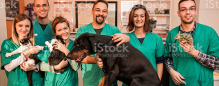

Desde 2005 nos dedicamos a cuidar do seu Melhor Amigo, sempre buscando oferecer o melhor atendimento.Nossa história começa com uma menina chamada Teresa, que desde pequena já dava sinais da sua vocação com os animais.
Em 2001, a recém-formada e agora Médica Veterinária, Dr. Teresa passou por algumas fazendas e clínicas, trabalhando com animais de diversos portes e características. Em um desses locais, conheceu a Dr. Ana e de imediato inicia-se uma amizade. Em 2004 surge uma necessidade em comum de criar um espaço de acolhimento e cuidado que oferecesse os melhores tratamentos e um atendimento superior. No ano seguinte nasce a Clinica Melhor Amigo, trazendo o Atendimento Clínico, de Urgência e Emergência 24hrs e Fisioterapia Animal. Desde então, não pára de trazer novidades em tratamentos para os nossos melhores amigos. Em 2007, a terapia de Acupuntura foi incorporada aos demais tratamentos que a clínica oferece.
Hoje a clinica conta com uma equipe de 20 colaboradores, laboratório próprio e serviço de Ambulância com UTI Móvel.
